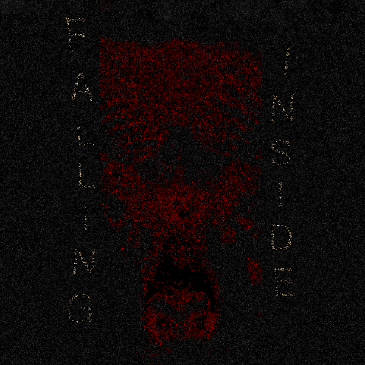
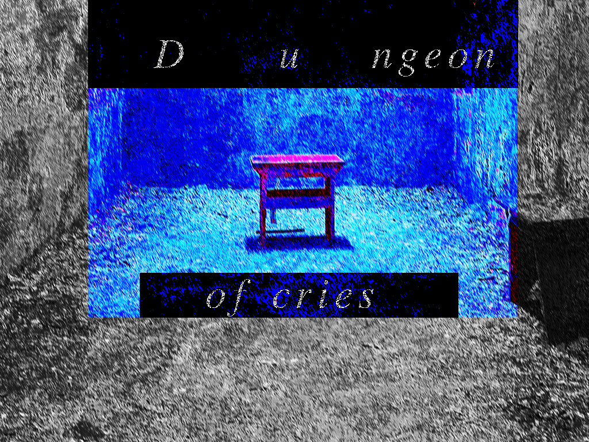
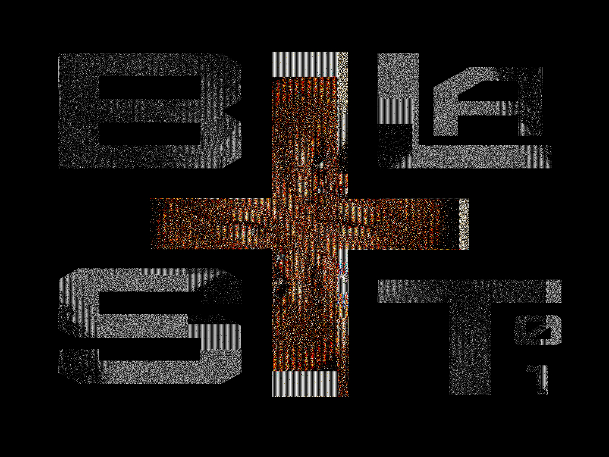

I made a lot of songs that year, but selected only the ones worth showing.
Infestation of the Guilty
20231213
Originally was a part of the Listen and you'll hear album. It didn't fit the vibe though, so I took it out. It's a solid track though.
The weird bass in this track was problematic during making as it would always play even after specifically stopping the track. I almost went insane listening to a constant drone of this shit. As a cherry on top, after making the whole song I added the weird last drop, and of course the track crashed on me when I wasn't done with adding effects. Good thing i had the ending in place so not much was lost.
Shroom Door
20231016
The track that influenced and motivated me to start working on a new album. Includes a high energy last drop that doesn't suck much.

Falling Inside
20231002
My effort of making a heavy sounding track without a use of instruments (that i dont have). Happy about this song as the main melody is my distorted voice, and in my opinion turned about how i envisioned it.

Dungeon of Cries
20230811
At the time of making this track I listened to a bit of Dungeon Synth and got inspired. Then I made this completely unrelated track. At that time it was the longest of all my creations. I had fun making it.

Blast01
20230606
Made this track as part of a 30 min music making challange we did pretty regularly at that time. The theme was to use Blast01 sound from the base flstudio plugin DrumPad. I would say the snare (so the Blast01 sound) is the worst aspect of this track. After the 30 minutes has past I spend some time refining this piece.
Tortilla Ostre Chilli
20230710
Track made as part of 30 min challange, and then refined into a full on song. One of my best I think. Personal favorite. The title comes from a snack laying around in my room at the time of making.
No room
20230505
This track was made with an intent of using a nice piece of a drop from a song that I butchered. Its pretty fine, but listening to it now, I feel like the whole thing is just a buildup to nothing. The first section is good though.
An alternative name for this track is SuperSzybkość3000.
Pyramide
20230428
Weird track that im not particularly happy about. I just zoned out and this was created. The mix and the whole track is kinda recklessly put together on purpose, but I think it creates a weird vibe. That doesn't change the fact its pretty shit.
Fun fact: I didn't intend to write pyramid wrong, just didn't know how its spelled.
Please, go
20230411
I don't recall making this piece at all. In fact its as if it just appeared on my drive. Never the less it is pretty nice, and I don't think i spend a lot of time on it.